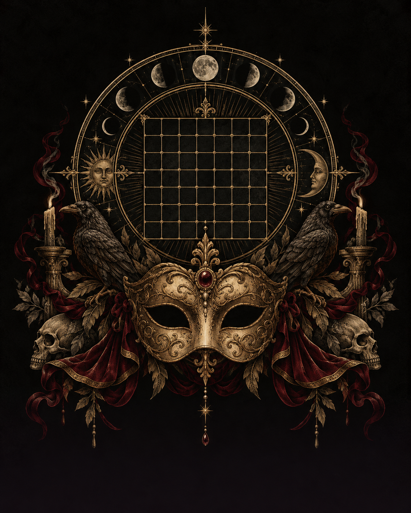

The Last Masquerade
Secret Grid · 守夜人工具
命运轮转
选择本轮仍在场的玩家，然后抽取行动顺序。
等待抽取
揭面审判
通过发信脚本提供的主持人链接进入，即可自动启用核验。选择双方，只显示正确或错误。
核验码由发信脚本生成，请勿发送给玩家。
等待指认
仅判断宿敌关系；出局、指认次数和获胜状态请由守夜人记录。核验在本设备完成，不上传数据。
命运法则
每轮在空格放置生之烙印（南瓜）或死之烙印（骷髅），或选择 Pass。观察他人的行动、试探宿敌，在封盘前决定是否指认。命运碎片可以交易并换取额外行动。